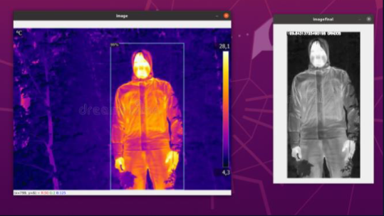

Master's Thesis: Deep Learning Voice Mimic for Alexa
The main focus of this project was the development of a body temperature monitoring system. This system is designed to detect febrile states and assist in preventing the spread of diseases in crowded areas by analyzing images obtained from thermal cameras.
At the heart of this system, advanced convolutional neural networks were used. Various architectures, including YOLO and RCNN, were explored and tested. Additionally, Detectron 2 network, developed by Facebook, was used for detecting and tracking individuals in a video, whether in the infrared or visible spectrum.
Once detection and tracking were done, the system selects a specific point on the head, usually the hottest point, and compares this data with a pre-established scale that relates the image color with the corresponding temperature. This method allows determining the person's temperature in the image with high accuracy. If an individual is detected with a high temperature, indicative of a febrile state, the system generates an alert and notifies the operator or the person in charge of monitoring the program.
